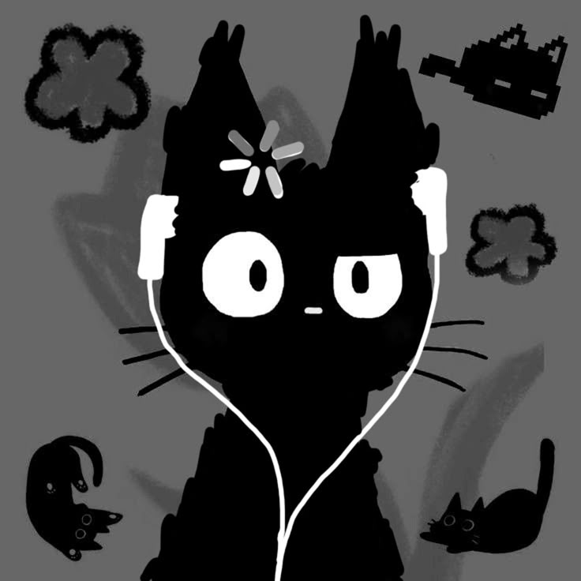

Also called Vautherine, Catherien, Cathegrne, Chatheine, Cat S, etc. Thanks.
I am 14 years old, and I have an older sister, Adeline. I currently go to Eastside Preparatory School, just like I have been for the past three years - before that, I spent seven years at the same elementary school. I have no plans for the future other than making it through to the other side of summer, and then to the other side of high school, and then hopefully to the other side of college, and by then I should probably get my act together and stay alive. I speak two languages - English, my first language, and half of two languages (Spanish and Chinese). Languages that I want to learn but probably never will are:
in that order. I peaked in sixth grade. There has not and will not be any improvement to my character after that point. I literally spend most of my time thinking about working while blatantly not working nowadays.
